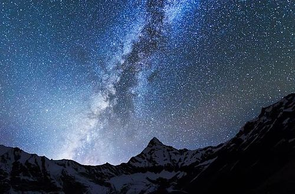

|  |
The daytime sky is dominated by the sun, the scattered light from it which gives the sky its blue colour, and a rich variety of clouds. At night, it is transformed and we see the stars, planets and moon, as well as man-made satellites, and on occasion shooting stars (meteors). In between, we have the glories of the sunrise and the sunset. The sky has always fascinated mankind, and it should also fascinate children once their attention is drawn to what it has to offer. |